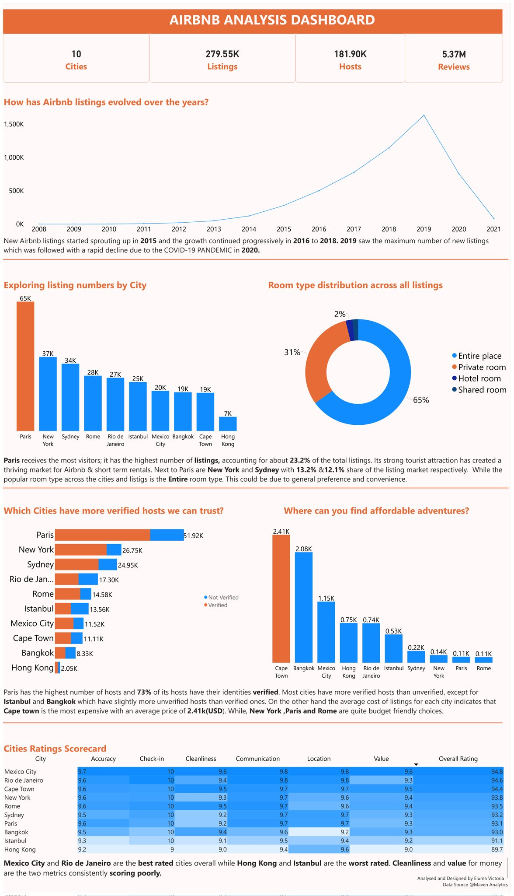
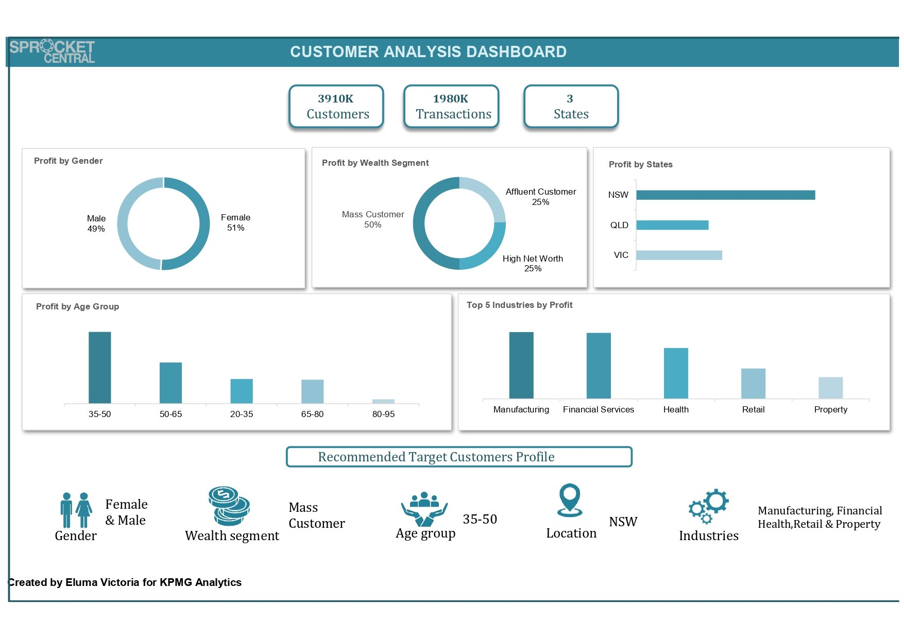
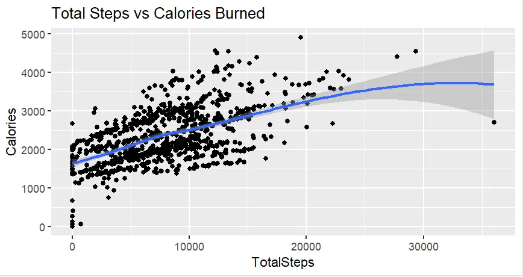

Using Power BI for analysis and visualization, I explored Airbnb data on 10 cities providing insights on listings, hosts, property types and reviews which will guide vacationers and aid decision making for investments.


The goal of the marketing team at Sprocket Central, a cycling bike company is to optimize resource allocation by focusing on high value customers so I used Excel to assess and improve data quality first, then analyzed the customer data to identify demographics and attributes associated with high value customers.

Using SQL for data cleaning and R for analysis and visualization. I explored activity and sleep data from Fitbit smart watch users and provided insights on user interaction and product experience to inform product improvements and marketing strategies.
_page-0001.jpg)
I participated in Diversity in Data Mental Health Awareness Month where I visualized survey data to show the intersectionality of mental health and socioeconomic factors.
Using SQL for data cleaning and R for analysis and visualization. I explored activity and sleep data from Fitbit smart watch users and provided insights on user interaction and product experience to inform product improvements and marketing strategies.